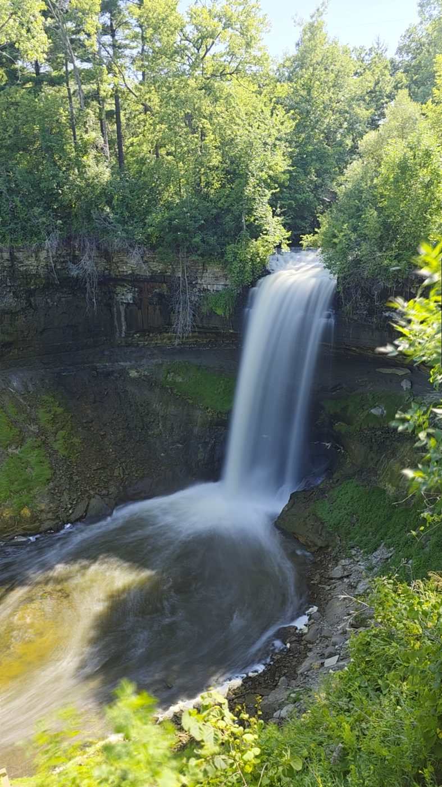
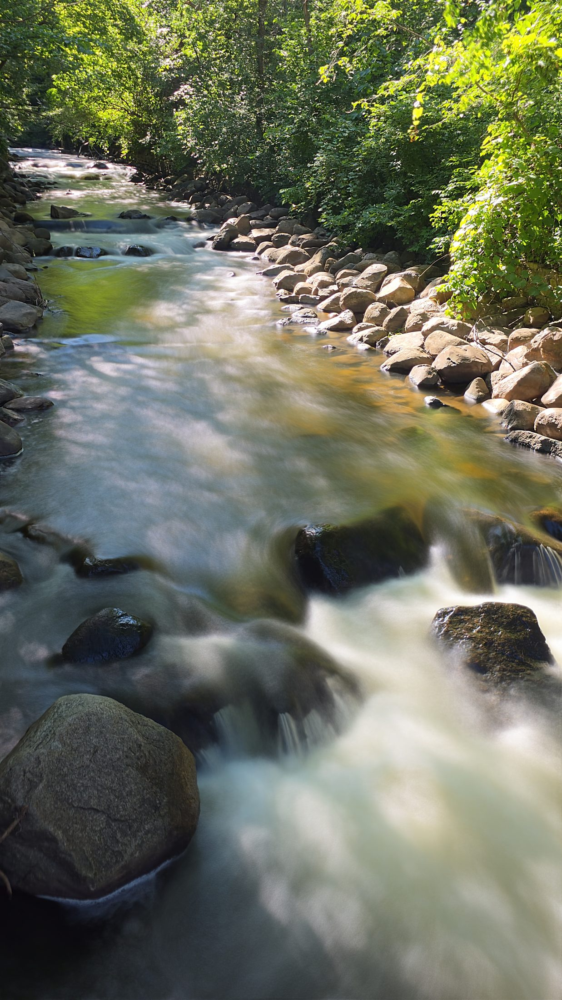
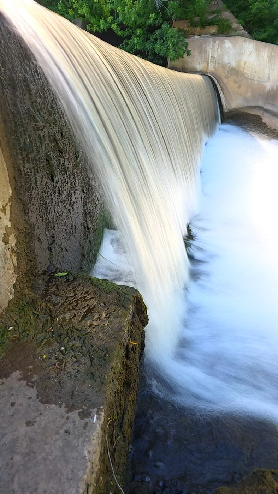
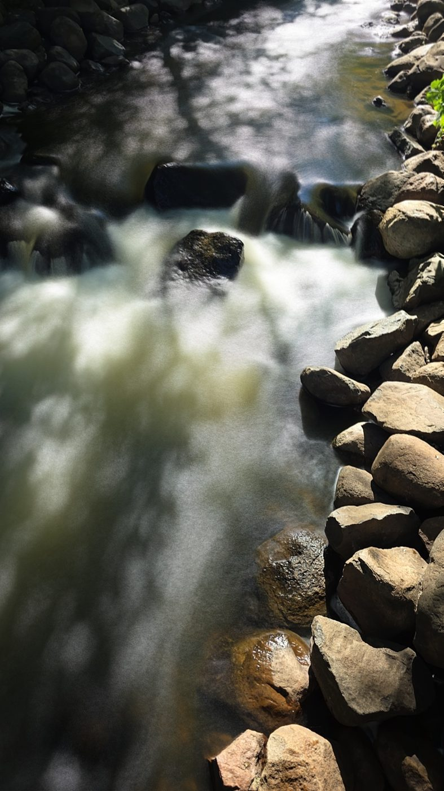
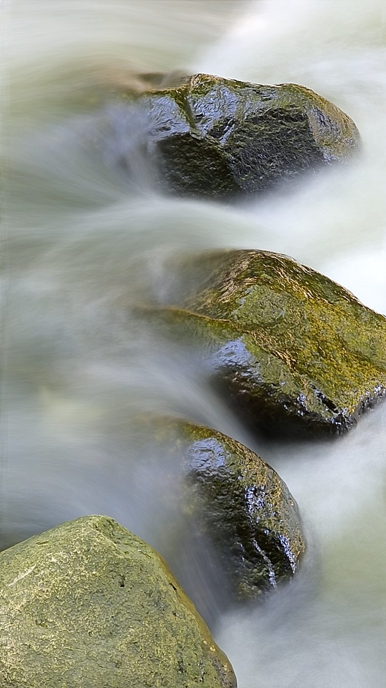

SilkShutter · by Extrosy
SilkShutter stacks hundreds of aligned frames into a single photograph — silky waterfalls, light trails, vanished crowds — steadied against your handshake, frame by frame, entirely on your phone.

How it works
A traditional long exposure holds the shutter open — which means a tripod, an ND filter, and one chance to get it right. SilkShutter instead records a stream of short, sharp frames and registers every frame to the scene before blending, so the static world stays tack-sharp while motion melts.
Point and hold for seconds or minutes — or import any video you've already shot and turn it into a long exposure after the fact.
Two alignment engines — an anchor-tracking mode and a dedicated no-anchor mode built for scenes that are mostly moving water — cancel your handshake frame by frame.
Frames accumulate in all blend modes at once, live while you shoot — so you can switch the look before, during, or after the exposure.
Blend modes
The classic ND-filter look — silky water, softened clouds, crowds fading to ghosts.
Light accumulates with an adjustable gain — a virtual aperture for night scenes.
Keeps the brightest pixel — light trails, star trails, fireworks.
Keeps the darkest pixel — erase bright moving objects from a scene.
Average plus an adjustable highlight streak — comet-tail motion.
Features
Per-frame registration keeps static detail sharp while motion blurs — shoot leaning on a railing or standing freehand.
Import a clip, trim it, pick an alignment mode and output size, done. Hardware-accelerated decode handles big files fast.
Import stacks render at up to 7680×4320 (Pro) with a fully GPU-resident pipeline — pixel-peep at 1:1.
Painted a subject that should stay frozen? Brush or magic-wand it and that region comes from a single sharpest frame instead of the blur.
Settings ride on draggable rulers with haptic detents — exposure, timer, zoom, and full manual optical exposure with real ISO and shutter stops.
Ultra-wide to tele to front camera — each lens is a first-class citizen in the zoom row.
Sharpen, film-style filters, and pinch-zoom review before saving a full-quality JPEG with proper camera EXIF (GPS optional, off by default).
No account, no network, no analytics. Photos go to your gallery and nowhere else — the app works in airplane mode.
Shot with SilkShutter
Every image below was shot handheld with SilkShutter and saved in-app. No desktop editing.




Editions